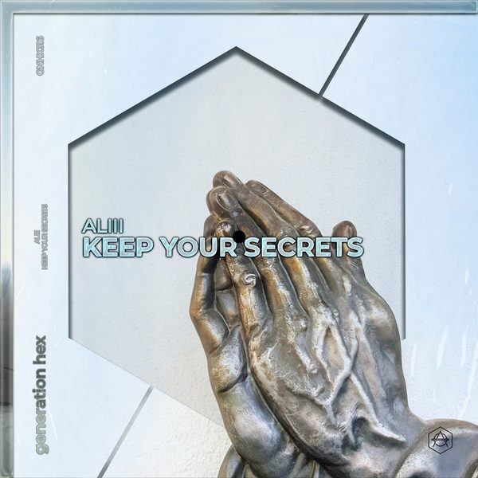

I 24 dischi
 1
Deep In Your HeartCID
1
Deep In Your HeartCID
 2
Pump It Up (Extended Mix)3 Are Legend & Tujamo & Jaxx & Vega
2
Pump It Up (Extended Mix)3 Are Legend & Tujamo & Jaxx & Vega
 3
Tra Tra (Extended Mix)HUGEL & BLONDISH & Nfasis
3
Tra Tra (Extended Mix)HUGEL & BLONDISH & Nfasis
 4
I Need Some (Extended Mix)Weiss, The Jones Girls
4
I Need Some (Extended Mix)Weiss, The Jones Girls
 5
Waiting (Extended Mix)Siege
5
Waiting (Extended Mix)Siege
 6
Champion (Extended Mix)YAX.X
6
Champion (Extended Mix)YAX.X
 7
Swaying (Extended Mix)Joachim Pastor & Joris Delacroix
7
Swaying (Extended Mix)Joachim Pastor & Joris Delacroix
 8
Transmission (Joris Voorn Extended Remix)Eelke Kleijn
8
Transmission (Joris Voorn Extended Remix)Eelke Kleijn
 9
Got Your Money (Extended Mix)DJ S.K.T, Mark Maxwell
9
Got Your Money (Extended Mix)DJ S.K.T, Mark Maxwell
 10
2 ThingsDon Diablo
10
2 ThingsDon Diablo
 11
Your LoveStuart Ojelay, Martin Wright
11
Your LoveStuart Ojelay, Martin Wright

12 Keep your secretsALII 13
Shibuya 1985Lakros
13
Shibuya 1985Lakros
 14
StepWoujii
14
StepWoujii
 15
Told You So (Extended Mix)KURA & AWIIN
15
Told You So (Extended Mix)KURA & AWIIN
 16
My Life (feat. Joe Killington)Wh0, Armand van Helden
16
My Life (feat. Joe Killington)Wh0, Armand van Helden
 17
Mad Swagga (feat. Coppa)Tom Enzy
17
Mad Swagga (feat. Coppa)Tom Enzy
 18
Do Work (Extended Mix)Frivolous Jackson
18
Do Work (Extended Mix)Frivolous Jackson
 19
Up & Down (Extended Mix)Chico Rose
20
Otherside vs Lose control vs Burning (Alex Guesta Mashup)RHCP vs Meduza vs Fisher
19
Up & Down (Extended Mix)Chico Rose
20
Otherside vs Lose control vs Burning (Alex Guesta Mashup)RHCP vs Meduza vs Fisher
 21
Chasing RushTony Metric
21
Chasing RushTony Metric
 22
Front 2 Back (Original Mix)DJ Indome
22
Front 2 Back (Original Mix)DJ Indome
 23
Nightmares (Fab Massimo Remix)Plastic Robots, Underlow
24
The Rockafella Skank (Jay Robinson Remix)Fatboy Slim
23
Nightmares (Fab Massimo Remix)Plastic Robots, Underlow
24
The Rockafella Skank (Jay Robinson Remix)Fatboy Slim
La tracklist
- 1 Deep In Your Heart CID Night Service Only (NSO)
- 2 Pump It Up (Extended Mix) 3 Are Legend & Tujamo & Jaxx & Vega Smash The House
- 3 Tra Tra (Extended Mix) HUGEL & BLONDISH & Nfasis WM Germany
- 4 I Need Some (Extended Mix) Weiss, The Jones Girls Toolroom Records
- 5 Waiting (Extended Mix) Siege Toolroom Records
- 6 Champion (Extended Mix) YAX.X SONO Music
- 7 Swaying (Extended Mix) Joachim Pastor & Joris Delacroix Armada Music
- 8 Transmission (Joris Voorn Extended Remix) Eelke Kleijn Armada Music
- 9 Got Your Money (Extended Mix) DJ S.K.T, Mark Maxwell Club Sweat
- 10 2 Things Don Diablo Hexagon
- 11 Your Love Stuart Ojelay, Martin Wright Word of Mouth Records
- 12 Keep your secrets ALII Bootleg
- 13 Shibuya 1985 Lakros Hexagon
- 14 Step Woujii Hexagon
- 15 Told You So (Extended Mix) KURA & AWIIN Actuation
- 16 My Life (feat. Joe Killington) Wh0, Armand van Helden Musical Freedom
- 17 Mad Swagga (feat. Coppa) Tom Enzy Heartfeldt Records
- 18 Do Work (Extended Mix) Frivolous Jackson Hysteria Records
- 19 Up & Down (Extended Mix) Chico Rose Tomorrowland Music
- 20 Otherside vs Lose control vs Burning (Alex Guesta Mashup) RHCP vs Meduza vs Fisher Mashup
- 21 Chasing Rush Tony Metric We Are Freaks Records
- 22 Front 2 Back (Original Mix) DJ Indome Black Lizard Records
- 23 Nightmares (Fab Massimo Remix) Plastic Robots, Underlow DIRTYBIRD
- 24 The Rockafella Skank (Jay Robinson Remix) Fatboy Slim Strictly Rhythm